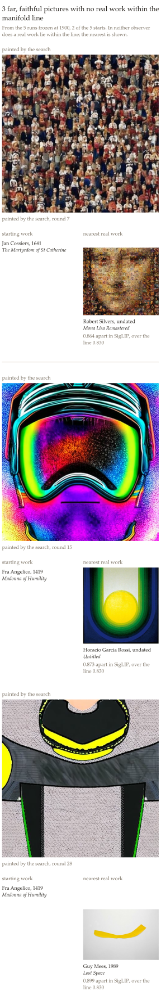
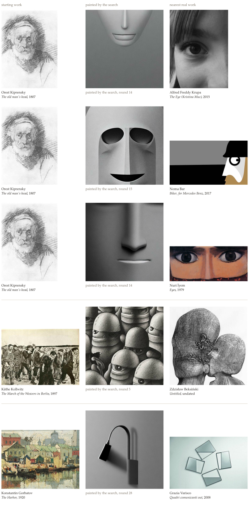
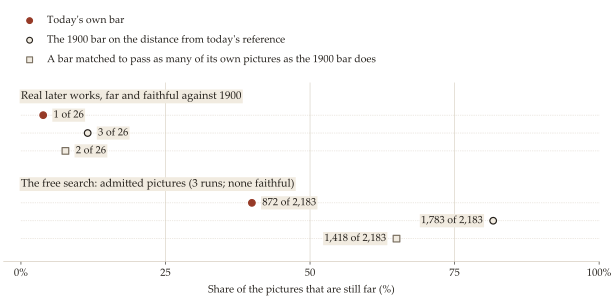

Q11 What did we find?
We froze the corpus at 1900 and let DuROOM search look for pictures far from it (Q10). So did it find anything, and what? From 5 works painted before 1900 it painted 9,600 pictures. 4,380 of them are far from the works before 1900 and are still pictures of what we asked for, i.e., far and faithful (Q7).
Each of the 4,380 we then set against the art we have today, the 172,171 works of the corpus. The manifold line is a pair of distances, one per observer, set so that 99% of 2,048 repainted real works have their nearest real work within it in at least one observer. A picture is on the manifold when a real work sits within the manifold line of it in at least one observer, and off the manifold when none does in either (Q7).
On the manifold
4,049 of the 4,380 are on the manifold, and 3,850 of them sit where art went only after 1900.1 For each picture we take the real works within the manifold line of it and read their dates (Figure 1). 3,850 have a work dated 1900 or later and none dated before 1900. 180 have a work dated before 1900, and 19 have only undated works (counts by start and by observer are in the appendix). Figure 2 shows some of the 3,850.
1,314 of the 3,850 are also badly described by the art before 1900. A picture’s leftover share is the part of it that the 32 main directions of the works before 1900 miss. It is large when, in both observers, it is over the share that 99% of the repainted works before 1900 lie below (Q7).2 The 1,314 are 30 in 100 of the search’s far and faithful pictures. Of the 94 repainted real works from 1970 on that are far and faithful, 27 are of this kind, 29 in 100. Many of the 1,314 sit close to one another. Taken in the order painted, and kept only when more than the minimum gap from every one kept before, 187 remain.
What does a later work within the manifold line tell us? Where the picture sits, and not that it is art. Most far and faithful pictures of any procedure have a later work within the manifold line: 82 of 94 repainted real works from 1970 on do, and so do 31 of the 32 far and faithful pictures the decoder paints from noise. The decoder has seen art from after 1900, and the Discussion takes this up. What the search adds over its controls is Q12.
![Two panels of 4 strips, one per loop and one for the single walk, each split into 4 parts: a work dated before 1900 within the manifold line; none dated before 1900 within the manifold line and a work dated 1900 or later within the manifold line; only an undated work within the manifold line; no real work within the manifold line. All far and faithful pictures: the search, 4,380: 180, 3,850, 19 and 331; the random-score loop, 1,534: 66, 1,247, 34 and 187; the no-step loop, 2,708: 834, 1,714, 53 and 107; the single walk, 2,446: 60, 2,065, 44 and 277. Those with a large leftover share: the search, 1,538: 11, 1,314, 8 and 205; the random-score loop, 87: 0, 69, 2 and 16; the no-step loop, 36: 2, 13, 11 and 10; the single walk, 541: 412 in the second part and 129 left unsplit.](figures/dated_split_v3.svg)

From different starts, the same later works
From 5 different works the search arrives at the same later works. Take, for each of the 3,850 pictures, its nearest real work dated 1900 or later within the manifold line, in each observer. The pictures reach 492 such works. 104 of them are reached from 3 or more of the 5 starts, and 32 from all 5. Those 104 hold 3,089 of the 3,850 pictures (Table 1). The starts meet at stripe painting and op art: Gene Davis’s Flamingo (1965) alone is reached by 1,245 of the pictures, from every start.3 The controls meet less, or hardly at all (Q12).
Off the manifold
331 of the 4,380 are off the manifold: no real work of any date sits within the manifold line of them, in either observer (Figure 3). Their nearest real work sits at a median distance of 0.88 in DINOv3 and 0.87 in SigLIP, where the manifold line is 0.76 and 0.83. 227 of the 331 come from one start, Fra Angelico’s. Thinned by the minimum gap as above, 174 of the 331 remain. 205 of the 331 have a large leftover share. And here the starts do not meet: an off-the-manifold picture’s nearest off-the-manifold picture from another start sits at a median distance of 1.11 in DINOv3, against 0.52 for one from its own start.
Do pictures from different starts meet in one place that no real work sits near? For this we ran the 3 loops from 5 other works, dated 1807 to 1931. We scored them against today’s reference, 2,048 repainted works of every date, in place of the works before 1900, so that far means far from all the art we have. Of the search’s 9,600 pictures there, faithful or not, 1,716 are off the manifold, against 57 and 135 for its controls (Figure 5, Figure 4).4 The test counts eligible pictures. A picture is eligible when it is faithful, has no real work within the manifold line, and is read as away from the repainted works by AIMv2 too, the encoder kept out of the loop.5 It asks whether eligible pictures from 3 or more of the 5 starts lie close together in one place. They do not, for any loop. Among real works from 1970 on the test finds no such place either, so it cannot say whether one exists.6
Scored again against today’s reference, nearly all of the search’s 4,380 far and faithful pictures are no longer far.78 Nearly all of the real later works are no longer far either (Figure 6).


![Five panels, start 1 to start 5, on one shared scale, each with the 3 loops, the search, the random-score loop and the no-step loop, and 2 bars per loop: a solid bar for eligible pictures and an open bar for pictures with no real work within the manifold line in either observer. Eligible and the second count, starts 1 to 5: the search 465 and 555, 50 and 148, 238 and 498, 48 and 86, 246 and 429; the random-score loop 0 and 3, 1 and 1, 0 and 0, 3 and 12, 3 and 41; the no-step loop 0 and 5, 1 and 10, 0 and 0, 62 and 94, 0 and 26. All 5 starts, of 9,600 each: the search 1,047 and 1,716, the random-score loop 7 and 57, the no-step loop 63 and 135.](figures/today_by_start_v2.svg)

The way the century went
DuROOM search’s pictures and its controls’ lean the way the century went, as much as real works of 1900 to 1969 do. Q3 found the direction the later works lean along on average, the shift. We measure the lean of a picture, how much of its move away from the works before 1900 lies along it. The search’s pictures lean +0.25, the random-score loop’s +0.22 and the no-step loop’s +0.19, real works of 1900 to 1969 +0.20, and the free search about 0, like a random direction.910 So painting and reading back moves pictures the century’s way with or without a search. Its hits lean the century’s way too, 0.03 and 0.05 more than the controls’ hits.11 The decoder’s own round trips, with no search, reach +0.10 by the sixth trip, about half of what real works of 1900 to 1969 show.
So what did we find?
The Introduction asked: can the works a culture has already made tell us where it has not been, when all we measure is how far a candidate sits from them? Our answer is yes. From 5 works painted before 1900, DuROOM search painted 4,380 pictures that are far from the works before 1900 and still pictures of what we asked for. 4,049 are on the manifold, 3,850 of them where art went only after 1900, and from different starts the search arrives at the same later works. 331 are off the manifold. Taken all together, the search’s pictures lean the way the century went as much as real works of 1900 to 1969 do. We could not show a place off the manifold where pictures from 3 or more starts meet. How much of this is discovery, and how much is the decoder recalling later art, is the Discussion’s question. Next, Q12 asks what the search adds over its controls.
Footnotes
This reads dated works only. 3,519 of the 3,850 also have an undated work within the manifold line.↩︎
For the search’s far and faithful pictures the leftover share ranks close to the DINOv3 distance to the reference. The search’s score is built on the same kind of distance, with the start’s picture and the admitted pictures also counted, so this count is not independent of what the search is told. With undated works dated by their artist, and the pictures with a still-undated work within the manifold line set aside, the search is ahead of both controls (more at every start and a quarter more in sum) only at the 32 directions used here. The counts by start are in the appendix.↩︎
Near-copies of a work count separately. If the start made no difference to where a picture lands, about 174 works would be reached from 3 or more starts (the starts’ labels shuffled 1,000 times), so each start also keeps works of its own: the search has 104, 0.60 of that number. One run per start.↩︎
Solid bars count the eligible pictures, open bars the pictures with no real work within the manifold line in either observer, each count of the 1,920 pictures a run painted.↩︎
An eligible picture is faithful and has no real work within the manifold line of it in either observer, the start’s own work and its near-duplicates left out (Q7). AIMv2 reads a picture as away when its chord to the nearest repainted work is over the 99th percentile of that chord within today’s reference. The counts are in the appendix.↩︎
Of the 663 repainted works from 1970 on, measured against the art before 1970 alone, 12 are eligible, about 2 in 100. They do not lie close together in one place either.↩︎
Today’s own bar is the score that 99% of today’s reference lie below: 1.045 in DINOv3 and 0.958 in SigLIP. The matched bar, 1.006 and 0.917, passes 5 of today’s reference’s own pictures, as the 1900 bar passes 5 of the 1900 reference’s. The 1900 bar is applied as it is to the score read from today’s reference.↩︎
Under the 1900 bar on the score read from today’s reference, 4,221 of the search’s 4,380 far and faithful pictures are no longer far, and so are 1,493 of the random-score loop’s 1,534 and 2,664 of the no-step loop’s 2,708.↩︎
The lean takes the after-1900 shift direction of Q3 and removes its component along the pre-1900 mean: a vector’s lean is the cosine between its off-mean part and the shift’s. 20,000 random directions have a median of 0.000 (quartiles -0.024 to +0.025).↩︎
The medians are over all 9,600 pictures of each loop, 5 starts pooled, on the CLIP reading of the picture. In the decoder’s round trips, the change per chain from the start to the fifth trip is +0.06 (95% interval over chains 0.03 to 0.08). The medians at each trip are in the appendix.↩︎
The median lean of the search’s hits is higher than the random-score loop’s by 0.033 and than the no-step loop’s by 0.047, averaged over the starts (by start in the appendix). At matched distance, the share of far pictures that later works cover is higher for the search than for both controls only at the second start (+0.14 and +0.40); at the other starts the difference is 0.00 or cannot be computed.↩︎